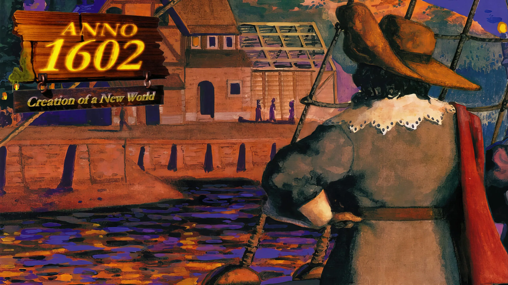
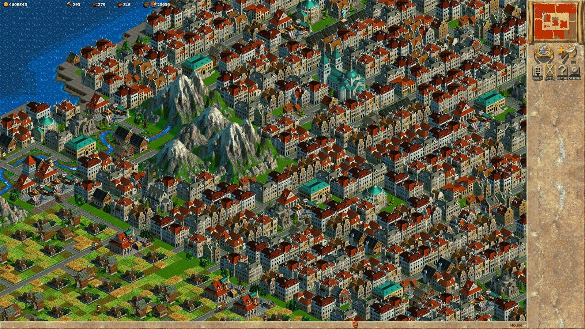

Über das Spiel
Anno 1602 gilt als das Spiel, das den Grundstein für mehr als zwei Jahrzehnte Aufbaustrategie legte. Die Mischung aus friedlichem Aufbau, Handel, Diplomatie und Erkundung war damals revolutionär. Spieler konnten erstmals eine Stadt errichten, Produktionsketten planen und mit KI-Herrschern handeln.
Gameplay & Besonderheiten
Zu den Kernelementen gehörten Produktionsketten wie Holz, Werkzeuge und Nahrung. Die Inselwelt war zufällig generiert, wodurch jede Partie anders verlief. Besonders beliebt war der freie Spielmodus, in dem man stundenlang seine Siedlung erweitern konnte.
Warum Anno 1602 heute noch Kult ist
- Sehr entspannter Aufbau – ohne Zeitdruck
- Klassische Pixelgrafik mit nostalgischem Charme
- Grundstein der Anno-typischen Warensysteme
- Millionenfach verkauft – eines der erfolgreichsten deutschen PC-Spiele